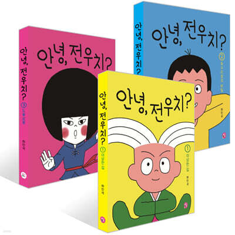
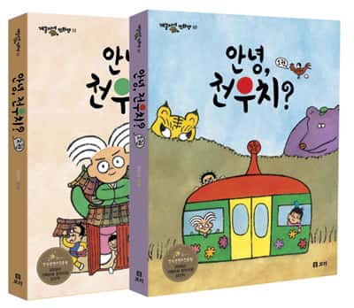
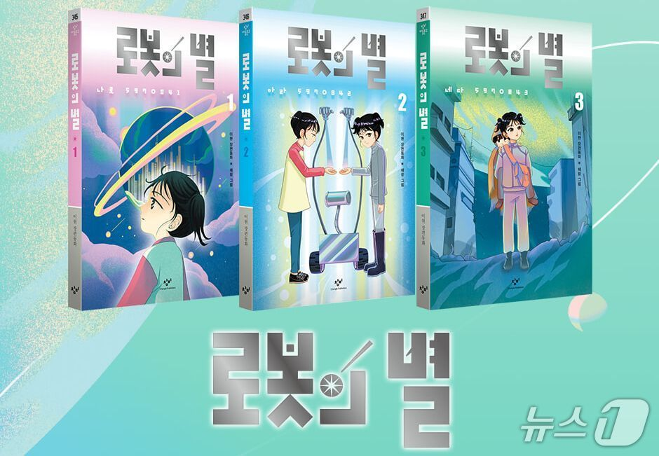
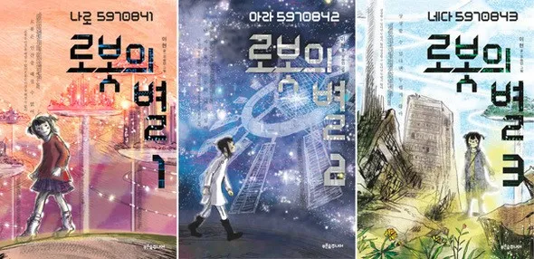
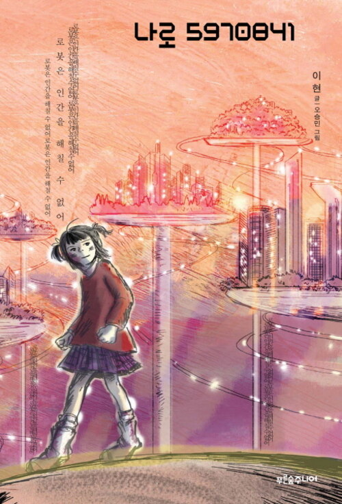

무한반복
나는 예전부터 어떤 한 것에 꽂히면 그것만 무한 반복하는 경우가 많았다. 가장 어렸을 때 기억을 떠올려보면, 유치원에 다니던 당시 집 근처 도서관에 있는 "안녕, 전우치?"라는 만화책을 몇 번이고 책이 닳도록 읽었던 기억이 있다.

개정판이 나왔던데, 표지 디자인이 이래서는 안된다. 너무 MZ하다.
이게 내가 알고 있는 전우치다. 전우치는 된장국 같은 그 특유의 구수한 맛이 있어야 한다. 초등학교 때에는 "로봇의 별"이라는 책에 푹 빠져, 항상 도서관에서 읽기도 했다. 주인공들의 이름(모델명)인 나로5970841, 아라5970842, 네다5970843은 시간이 지난 지금까지도 정확하게 기억하고 있다.
로봇의 별도 개정판이 나왔는데, 제작자에 실례가 되는 표현이지만 이건 정말 최악의 디자인이라고 밖에 할 수 없다. 분노를 유발하는 수준의 충격적인 디자인에 내 추억도 짓밟힌 기분이다.
이게 로봇의 별이다. 디스토피아적인 분위기와 각 권의 특징/컨셉이 제대로 표현되어 있다.
아까 사진에서는 화질이 낮아 잘 보이지 않았지만, 1권에는 "로봇은 인간을 해칠 수 없어", 2권에는 "난 자유로운 로봇이 되고 싶어", 3권에는 "상상할 수 있다면 두렵지 않아"와 같은 문장이 표지에 반복적으로 등장한다. 아동문학이라는 범주 안에서는 내용으로나 표지 디자인으로나 가히 최고의 작품이라고 할 수 있다. 그런데 개정판은... 초~중학생, 혹은 성인까지도 재미있게 즐길 수 있는 수준의 걸작을 유치원~초등 저학년 수준의 동화로 전락시켜 버렸다.어쨌든 다시 본론으로 돌아와서, 나는 하나의 작품에 꽂히면 그것만 반복하는 경향이 있다. 유튜브의 경우에도 마음에 드는 영상은 영상 전체를 암기해버릴 정도로 반복해서 시청한다.
최근에 반복중인 컨텐츠는 카멜의 Air Born이다. 나는 카멜의 Mirage를 귀가 닳도록 들어 스포티파이 통계로만 봐도 재생 시간이 54시간을 넘는데, 정작 Mirage 외 카멜의 다른 앨범을 들어본 적은 거의 없다(참고로 Mirage의 수록곡인 Lady Fantasy는 스포티파이 통계상 내 인생에서 가장 많이 들은 곡으로, 이 곡 하나로만 재생 시간이 1,700분을 넘는다). 좋아하는 앨범의 범위를 넓히고자 Moonmadness를 들어보았고, Air Born에 완전히 빠져버렸다. 사실 개인적으로 Moonmadness는 Mirage에 비교했을 때 그다지 취향에 맞는 느낌의 앨범은 아니었지만, Air Born은 내가 아는 카멜의 그 맛이 제대로 살아있는 곡이다.
너무 두서없이 의식의 흐름대로 글을 써버렸는데, 나의 이러한 특성은 내가 걱정스러워하는 나의 모습이기도 하다. 이건 자기혐오적인 뉘앙스보다는 불안에 더 가깝다. 이미 경험한 것을 똑같이 경험하는 것으로 얻는 것이 없는 듯한 느낌이 든다. 이러한 불안은 지금 이 시간이 유한하다는 것을 인지하고 있기 때문인데, 역으로 '그걸 알고 있는 놈이 왜 이딴 생활을 하고 있는 거지'라는 자기반성을 항상 하게 된다.
한동안 글을 쓰지 않아서 그런지, 나도 내가 무슨 말을 하려고 하는 건지 무슨 말을 하고 있는 건지도 모르겠다. 그저 제대로 된 삶을 살고 싶다.